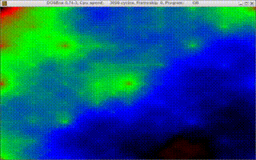
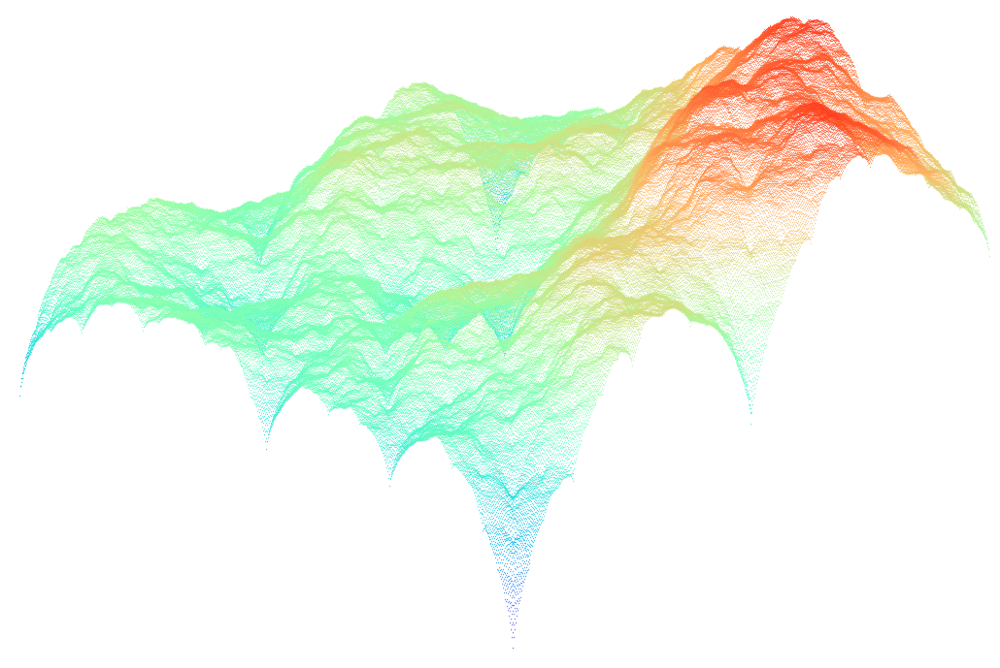

updated at 2021-02-26 by wojtek at bitologia.org (index)
Iterative (slow and unefficient) solution based on the diamond-square algorithm.
P[0][0] = random value
P[0][L] = random value
P[L][0] = random value
P[L][L] = random value
S=0 S=1
0 . . . . . . . 0 0 . . . 1 . . . 0
. . . . . . . . . . . . . . . . . .
. . . . . . . . . . . . . . . . . .
. . . . . . . . . . . . . . . . . .
P = . . . . . . . . . 1 . . . 1 . . . 1
. . . . . . . . . . . . . . . . . .
. . . . . . . . . . . . . . . . . .
. . . . . . . . . . . . . . . . . .
0 . . . . . . . 0 0 . . . 1 . . . 0
S=2 S=3
0 . 2 . 1 . 2 . 0 0 3 2 3 1 3 2 3 0
. . . . . . . . . 3 3 3 3 3 3 3 3 3
2 . 2 . 2 . 2 . 2 2 3 2 3 2 3 2 3 2
. . . . . . . . . 3 3 3 3 3 3 3 3 3
P = 1 . 2 . 1 . 2 . 1 1 3 2 3 1 3 2 3 1
. . . . . . . . . 3 3 3 3 3 3 3 3 3
2 . 2 . 2 . 2 . 2 2 3 2 3 2 3 2 3 2
. . . . . . . . . 3 3 3 3 3 3 3 3 3
0 . 2 . 1 . 2 . 0 0 3 2 3 1 3 2 3 0For non-square lattices one needs to implement fitting/rescaling procedure.
QBasic source is wickedly slow, although it is possible to watch the final effect:

Generic picture
for a 513 × 513 lattice generated
by the C code and visualised with gnuplot
$ gnuplot set palette rgb 33,13,10 splot 'plasma02.dat' with points palette pt 4 ps 0.5
A bit faster and more efficient recursive solution generates a similar landscape:

{kind=link}